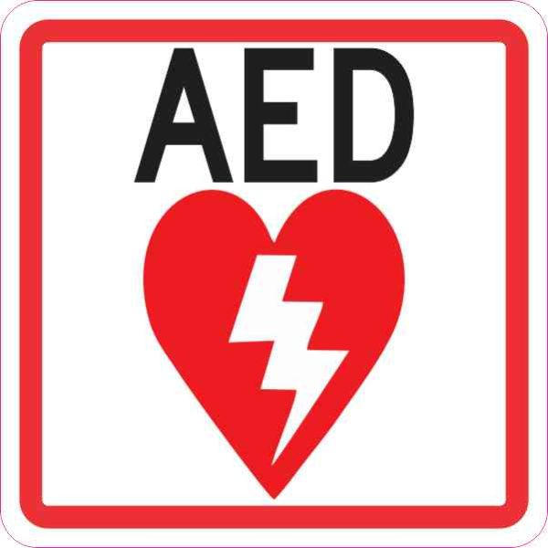

The central focus of this website has been the introduction of visual mnemonics and then learning the basic life support algorithms with visual mnenomics.
The initial learning the algorithms is the first step but then you need to remember them long term. Using visual mnemonics definitely helps with the initial learning and with long term retention but you will still need to practice with spaced repetition reveiws of the algorithms. You will not need to practice as near as often as with using rote memorization but you still need to practice. At first revewing the algorithms daily helps but then pretty quickly reveiwing them no more than weekly will be all you need. Everyone is different but you more be able to eventually space your revewing the algorithms out greatly.
In addition to learning the algorithms there are other very important aspects of preparedness listed below.
AD
AD

AD
AD